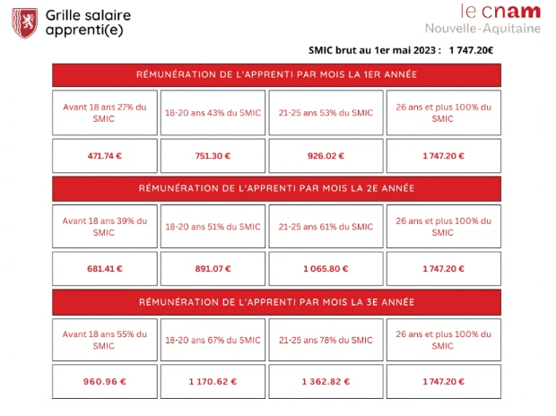

Informations Utiles
Ce que je recherche en ce moment
J'entre en Licence Pro informatique parcours jeu vidéo en octobre prochain à l'ENJMIN. [détail de cette formation]Ce que je recherche, c'est un contrat d'alternance pour les trois prochaines années (à partir de janvier 2024 au plus tard) dans une entreprise. L'avantage de l'alternance que propose l'ENJMIN est que les cours sont entièrement à distance à partir de janvier 2024. Chaque semaine, quatre jours sont consacrés à l'entreprise, et un seul jour aux cours.
Les aides à l'emploi éligibles aux entreprises
Les employeurs d'apprentis bénéficient de nombreuses aides.Quel salaire pour cette alternance ?
Ayant 18 ans le 21 décembre 2023, si une entreprise me prend dès janvier 2024 pendant 3 ans, alors le salaire attendu sera le suivant:-43% du SMIC durant ma première année
-51% du SMIC durant ma deuxième année
-67% du SMIC durant ma troisième année
Plus d'information sur ces salaires dans le tableau ci-dessous:
